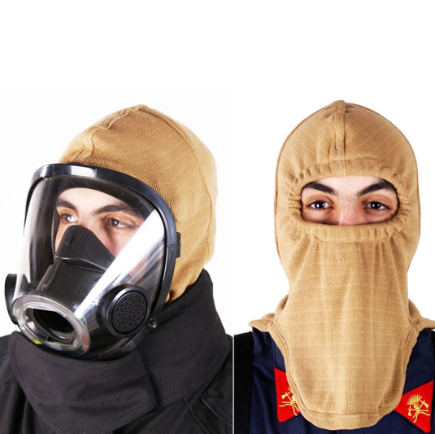
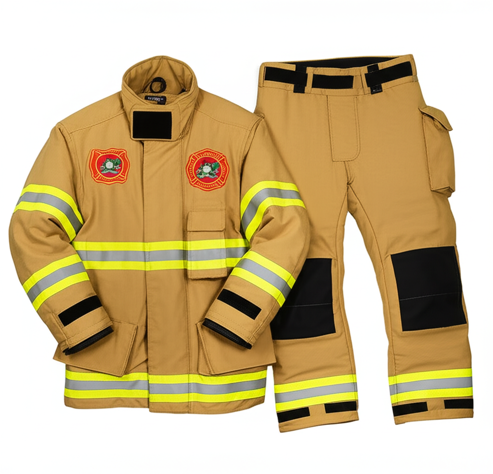
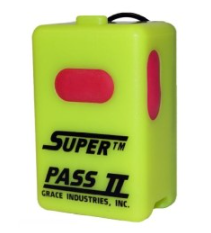
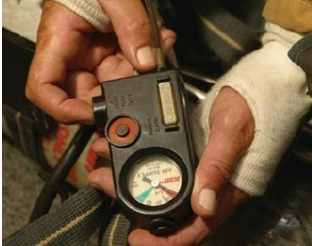
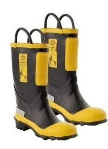
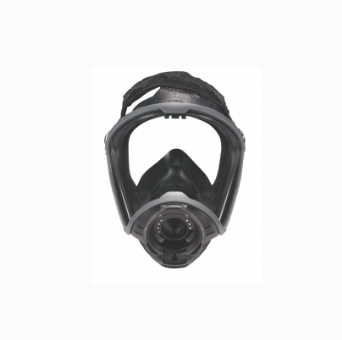
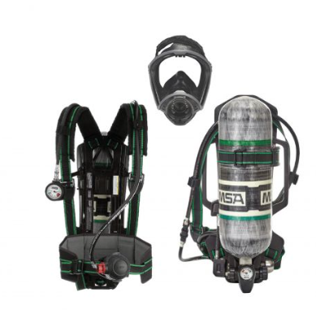

Módulo de Estudio y Evaluación
Estadísticas Generales
Total Respuestas Correctas: 0
Módulos Completados: 0
Resumen y Datos Clave (Clase 1: Marco Histórico)
Marco Histórico Bomberil (Orígenes)
Los primeros antecedentes de organizaciones de bomberos se remontan a la Antigua Roma (año 64 D.C.). Los "Triumviri Nocturni" y "Vigiles" (creados por el emperador Augusto) fueron los encargados de combatir incendios y mantener la seguridad.
- Vigiles se dividían en: Aquarii (agua), Siphonarii (mantas y bombas), Centones (iluminación), Bocinarii (alarma).
- El lema actual de los bomberos en Italia, "Ubi dolor ibi vigiles" ("allí donde hay dolor están los vigilantes"), rinde homenaje a estos pioneros.
Marco Histórico Nacional (Argentina)
La historia de los Bomberos Voluntarios Argentinos comienza en 1884, impulsada por la comunidad de inmigrantes italianos en el barrio de La Boca, Buenos Aires. Las viviendas de la época, llamadas "conventillos" (construidas con madera y chapa), eran altamente propensas a incendios.
- Un gran incendio en diciembre de 1883 motivó a Don Tomás Liberti y sus hijos (Oreste y Atilio) junto a vecinos a organizarse.
- El 2 de junio de 1884 se formó el primer Cuerpo de Bomberos Voluntarios de la República Argentina: "Societa di Pompieri Italiani Volontari di La Boca". Su lema era "Volere è Potere" (Querer es Poder).
Marco Histórico Institucional (Bomberos Voluntarios Malvinas Argentinas)
ASOCIACIÓN BOMBEROS VOLUNTARIOS MALVINAS ARGENTINAS

- Fundación: 03 de marzo de 1984.
CUARTEL CENTRAL "Juan Espina"
- Nombre del Cuartel Central: Juan Espina.
- Dirección: Dr. Baroni 2684.
- Teléfono: 4660 - 2222.
- Primer Presidente H.C.D.: Mendez Bernardo.
- Primer Jefe C.A.: Garcia Jose (Legajo 166/001).
- Actual Presidente H.C.D.: Demilio Gabriel.
- Actual Jefe C.A.: Oficial Herrera Andrés.
DESTACAMENTO N° 1 GRAND BOURG "Dionicio García"

- Nombre del Destacamento: Dionicio García.
- Fecha de Inauguración: 23 de Febrero de 1993.
- Dirección: Paso de los Andes 951.
- Teléfono: (02320) 48-1777.
- Actual Presidente H.C.D. (Asociación): Demilio Gabriel.
- Actual Jefe C.A. (Asociación): Oficial Herrera Andrés.
- Actual Encargado del Destacamento: Oficial Paz.
Resumen basado en "CLASE 1 MARCO HISTORICO.pdf".
Resumen y Datos Clave (Clase 2: Organización Bomberil)
La Institución
ASOCIACIÓN DE BOMBEROS VOLUNTARIOS DE MALVINAS ARGENTINAS:
- Fundada el 3 de Marzo de 1984 por un grupo de personas tras la separación del municipio de Gral. Sarmiento.
- Primer presidente: Mendez Bernardo.
- Primer Jefe del Cuerpo Activo: Garcia Jose (Legajo 166/001).
- Es una asociación civil, sin fines de lucro y de bien público.
- Cuenta con Personería Jurídica otorgada por la Dirección Provincial de Personas Jurídicas de Bs. As.
- Se rige por Estatutos Sociales (definen nombre, domicilio, misión, autoridades; máxima autoridad: Asamblea de socios) y la Ley Provincial N° 10.917.
- Reconocida por la Dirección Provincial de Defensa Civil de Bs. As.
- INOBV (Identificación Numérica de Organismos de BV): Malvinas Argentinas es el N° 166.
Socios
- Activos: Solicitan ingreso, cumplen requisitos (antecedentes, físico, psíquico), aprueban Curso Obligatorio. Integran Cuerpo Activo, Reserva o Cuerpo Auxiliar. Tienen la obligación de prestar servicios.
- Protectores: Solicitan ingreso, son aceptados, abonan cuota mensual. Pueden elegir y ser elegidos en asambleas, integrar el Consejo Directivo, y ejercer la representación, administración y gobierno de la asociación.
Autoridades de la Institución
Dos autoridades principales: El Consejo Directivo y el Cuerpo Activo.
- Consejo Directivo:
- Conducción y administración general, representación legal.
- Define política de servicios no regulados por ley.
- Ejerce contralor sobre el Jefe de Cuerpo y sus funciones.
- Puede imputar al Jefe, promover su relevo.
- Designa al Jefe de Cuerpo (seleccionado de una terna de los tres oficiales en actividad de mayor jerarquía y antigüedad).
- Gestiona altas y bajas de socios.
- Presta o no acuerdo a propuestas de ascensos de Jefatura y a fallos de Tribunales para sanciones.
- Cuerpo Activo:
- Integrado por socios activos.
- Organización bajo una estructura piramidal (Escalafón Jerárquico), determinada por capacidad, antigüedad e idoneidad.
- Comandado por el Jefe de Cuerpo (máxima autoridad del Cuerpo, miembro permanente del Consejo Directivo, asesorado por el cuerpo de oficiales).
- Regulado por Ley 10.917 y Decreto 4.601. La Dirección General de Defensa Civil es el ente de regulación (Art. 24, Ley 10.917).
- Obligaciones principales: prestar servicios, mantener equipos y elementos, y prestar colaboración a emprendimientos sociales.
- La Jefatura se integra por: Jefe de Cuerpo, Segundo Jefe de Cuerpo, y Oficiales (como Jefes de Secciones, Destacamentos o Servicios).
Orden Interno y Jefatura
Las actividades se dividen en Orden Interno (puerta para adentro) y Servicios (puerta para afuera).
- Jefe de Cuerpo:
- Máxima autoridad del Cuerpo Activo, Cuerpo Auxiliar, Reserva y Escuela de Cadetes.
- Su autoridad proviene del grado y del cargo (designación por Consejo Directivo).
- Es el único que administra justicia por faltas y aplica castigos.
- En infracciones graves, ordena instrucción de sumario y designa Instructor y Tribunal (con apoyo de oficiales).
- Comanda servicios, material, personal; responsabilidad absoluta.
- 2do Jefe del Cuerpo Activo: Sigue en jerarquía al Jefe, lo reemplaza en ausencias y cumple funciones de oficial.
- Organización del Cuerpo Activo (divisiones del Jefe):
- El Jefe divide el Cuerpo en Secciones y Departamentos.
- El Segundo Jefe de Cuerpo supervisa las tareas de las cuatro secciones ejecutivas principales:
- Ayudantía: Incluye Depto. Personal (Legajos, Comunicaciones, Cómputos), Depto. Técnico (Proyectos, Asesoramiento, Prensa, Estadística, Prevención, Legal), Ropería, Finanzas, Sanidad.
- Materiales y Equipos: Equipos contra Incendio y Rescate, EPP, Elementos de Zapa y Auxiliares, Intendencia.
- Automotores: Autobombas, vehículos de rescate, transporte de personal, ambulancias, cisternas, motoristas.
- Capacitación: Capacitación Interna, a Terceros, Escuela Zonal.
Escalafón Jerárquico
Estructura piramidal que determina grados jerárquicos.
- Jefe del Cuerpo Activo
- 2do Jefe del Cuerpo Activo
- Oficiales: Imparten órdenes, asumen responsabilidades de jefe.
- Oficial Superior: Comandante General.
- Oficiales Jefes: Comandante Mayor, Comandante, Sub-Comandante.
- Oficiales Subalternos: Oficial Principal, Oficial Inspector, Oficial Ayudante.
- Suboficiales: Secundan a jefes, transmiten órdenes, controlan cumplimiento.
- Suboficiales Superiores: Suboficial Mayor, Suboficial Principal, Sargento Primero.
- Suboficiales Subalternos: Sargento, Cabo Primero, Cabo.
- Bomberos (Tropa): Brazo ejecutor. Obligaciones: amor al servicio, capacitación permanente y obediencia.
Resumen basado en "CLASE 2 ORGANIZACION BOMBERIL.pdf".
Resumen y Datos Clave (Clase 3: Leyes y Decretos)
Ley Nacional 25.054 (Bomberos Voluntarios)
Sancionada el 10 de diciembre de 1998. Regula la organización y misión de los bomberos voluntarios en Argentina.
- Objetivos:
- Establecer un subsidio nacional.
- Reconocer el servicio público de los bomberos voluntarios.
- Brindar apoyo económico para capacitación y equipamiento.
- Beneficios:
- Puntaje especial en planes de viviendas del Estado.
- Atención prioritaria en salud pública por alteraciones de salud debido a la actividad bomberil.
- Considerados movilizados en emergencias (situación laboral es carga pública para empleadores).
- Exenciones:
- Exentos de impuestos nacionales, derechos y tasas aduaneras.
- Fondos y bienes inembargables e inejecutables.
- Administración del Subsidio: Dirección Nacional de Defensa Civil (Secretaría de Seguridad Interior, Ministerio del Interior).
Ley Nacional 23.139
Sancionada el 30 de septiembre de 1984. Otorga beneficios a Sociedades de Bomberos Voluntarios.
- Artículo 1°: Beneficiarias son todas las entidades sin fines de lucro dedicadas a la protección de la población en incendios y/o accidentes (Sociedades de Bomberos Voluntarios).
- Artículo 2°: Exención del pago de impuestos nacionales.
- Artículo 3°: Invita a provincias y municipalidades a extender este beneficio.
Ley Provincial 10.917 (Provincia de Buenos Aires)
Sancionada el 31 de mayo de 1990. Regula organización y funcionamiento de asociaciones de bomberos voluntarios en la provincia.
- Aspectos Principales:
- Deben constituirse como personas jurídicas de bien público sin fines de lucro.
- El Coordinador General de Defensa Civil de la Provincia autoriza su funcionamiento.
- Deben denominarse con el nombre del partido, ciudad o localidad de su cuartel central.
- Federaciones de asociaciones son entidades de segundo grado que representan a las asociaciones.
- Funciones de los Bomberos Voluntarios (según esta ley):
- Prevención, extinción e investigación de incendios.
- Rescate y salvamento de personas y bienes.
- Acción educativa de la comunidad para la prevención.
Resumen basado en "CLASE 3 ley 20.054 - Ley 10.917 y decretos dc.pdf". (Nota: La ley nacional es la 25.054, no 20.054 como se menciona en una parte del PDF).
Resumen y Datos Clave (Clase 5: Guardia, Instrucción, Servicios)
La Guardia
- Servicio organizado y pasivo para contar con personal en el Cuartel 24/7, los 365 días del año, para aprestamiento inmediato.
- Cada institución organiza su sistema, pero requiere afectación generalizada del personal.
La Instrucción
- Día y hora preestablecida para que el Cuerpo Activo asista al Cuartel para prácticas, clases de capacitación y entrenamiento permanente.
- Objetivo: Mantener un perfecto estado profesional para prestar servicios.
Los Servicios
Ley Provincial 10.917 (Art. 3°) reconoce el carácter de servicio público a las actividades de los Cuerpos de Bomberos Voluntarios.
Misión del Cuerpo Activo (Art. 23° Ley 10.917):
- Prevención y extinción de incendios.
- Rescate y salvamento de personas y bienes.
- Conservación de materiales y equipos.
- Información y educación de la comunidad sobre el servicio.
- Intervención general en toda acción de su misión.
Clasificación de Servicios (según prontitud/urgencia):
- Servicios de Emergencia: No admiten dilación. Convocatoria inmediata. Sale a cargo el superior presente.
- Incendios en General (01)
- Incendios Forestales (11)
- Auxilios (02)
- Desastres (04)
- Incidentes con Materiales Peligrosos (10)
- Colaboración (a otros Cuerpos en estos tipos de servicio) (05)
- Servicios Autorizados: Se prestan con orden interno preestablecido, autorizaciones y personal idóneo.
- Especiales (03)
- Guardias (06)
- Comando (07)
- Técnico (08)
- Ceremonial (09)
Jefe de Servicio: Es el de mayor jerarquía presente en el siniestro, ejerce el mando.
Jefe de Dotación: Superior que viaja en una unidad.
Jefe de Fuerzas: Mayor jerarquía presente cuando salen dos o más unidades o se encuentran en el siniestro.
Definición y Clasificación Detallada de Servicios:
- 01. INCENDIO: Fuego incontrolable (excluye forestales y MATPEL).
- 02. AUXILIO: Hecho (natural, accidental, intencional) que pone en riesgo vidas.
- 03. ESPECIALES: No encuadrados, no obligatorios (ej: drizas, desagotes, suministro agua/energía).
- 04. DESASTRE: Convocados por Defensa Civil Municipal o Provincial.
- 05. COLABORACION: Fuera de jurisdicción, a requerimiento de Cuerpo vecino sobrepasado.
- 06. GUARDIAS: Destacamento de personal ante riesgos conocidos o retención en Cuartel para actuación inmediata.
- 07. COMANDO: Actividad del Jefe (o designado) representando a la institución ante Poder Público, Federaciones, etc.
- 08. TECNICO: Difusión de seguridad, verificación de planos/equipos anti-incendio, informes técnicos.
- 09. CEREMONIAL: Participación en actos patrios, aniversarios, desfiles, honores fúnebres.
- 10. MATERIALES PELIGROSOS (MATPEL): Hecho con riesgo a vida/bienes/ambiente por materiales peligrosos (con o sin incendio).
- 11. INCENDIOS FORESTALES: Fuego descontrolado en vegetales (pastizales, montes, etc.).
Resumen basado en "CLASE 5.pdf".
Resumen y Datos Clave (Clase 6: Aptitud, Estados, Ética, Órdenes)
La Aptitud Bomberil
- Definición: Calidad, idoneidad, capacidad y disposición para el buen desempeño de la profesión.
- Cualidades Requeridas:
- Capaz: Actuar sin titubeos ante riesgo.
- Idóneo: Conocimiento teórico-práctico para actuar con eficacia.
- Hábil: Destreza profesional por idoneidad y estado psico-físico.
- Dispuesto: Afrontar riesgo desde cualquier actividad pasiva, en cualquier momento.
- Cómo se consigue: Estudiando, capacitándose, compañerismo, cumpliendo obligaciones, deseos de superación.
Estado Físico y Psíquico
- Salud (OMS 1946): Completo bienestar físico, mental, espiritual, emocional y social; no solo ausencia de enfermedad. Cubrir necesidades afectivas, sanitarias, nutricionales, sociales y culturales.
- Estado Físico: Plan de ejercitación permanente (maniobras, deportes, elongación, resistencia).
- Estado Psíquico:
- Un buen estado físico no es suficiente sin equilibrio psíquico.
- Problemas emocionales pueden impedir correcta aplicación de conocimientos y disminuir capacidad operativa.
- Obligación de estar apto mentalmente; responsabilidad personal de expresarlo.
- Importante reconocer desequilibrios y pedir ayuda (a pares bomberos o profesionales).
- Reconocer indisposición es mejor que actuar bajo presión o en condiciones psíquicas inconvenientes.
- Obligación primera: guardar por la propia vida y seguridad (por compañeros, familia, etc.).
La Ética Bomberil
Normas y principios morales que guían el comportamiento. Incluye:
- Ser buena persona antes que bombero.
- Ejemplo de altruismo y civilidad.
- Respetar verdad y honestidad.
- Conducta ética en vida personal y pública.
- Respetar estructura jerárquica y administrativa.
- Mantener pulcritud e higiene.
- Abstenerse de abuso de sustancias.
- Decir la verdad, incluso en situaciones difíciles.
- Limitarse a exponer hechos, no influirse por comentarios.
Las Órdenes
- Definición: Modo de expresión (fonético o gráfico) con que un superior indica a un subalterno la ejecución de un mandato. Implica observación y afecta a quien la imparte y quien la obedece.
- Tipos de Órdenes:
- Individuales: A un hombre particular.
- Colectivas: A dos o más hombres.
- Verbales: Expresadas fonéticamente.
- Escritas: Documentadas o registradas.
- Específicas: Determina tarea, modo y forma.
- Global: Pone en marcha plan de trabajo o rol preestablecido.
- Del Orden Interno: Tareas dentro de ese régimen.
- De Servicio: Tareas relativas a servicios (emergencia o autorizados).
- Cumplimiento: Puede ser cumplida, no observada (no cumplida tal cual) o no ejecutada (no obedecida, más grave).
- Desobediencia/Incumplimiento: Implica falta de disciplina, debe ser sancionada. Para determinar gravedad y sanción, considerar: circunstancias, grado/cargo del infractor, impacto en servicio/disciplina, armonía del grupo.
- Autoridad Sancionatoria:
- Faltas (Reglamento Régimen Disciplinario): Sanciona el Jefe de Cuerpo.
- Infracciones (Faltas Graves): Sanciona el Código de Ética Bomberil mediante Tribunal, previa sustanciación de Sumario Disciplinario (con derecho a defensa).
El Mando
- Definición: Ejercer autoridad para educar, instruir, gobernar y conducir al personal subordinado. Aúna esfuerzos y afianza disciplina.
- Características del Ejercicio del Mando: Capacidad, integridad, valentía, transparencia de conocimiento, justicia, ecuanimidad, consideración.
- Mandar no es solo ordenar, sino asegurar fiel interpretación, impulsando con ejemplo.
- Exclusivamente personal, no transfiere responsabilidad. Quien manda es totalmente responsable.
- Superior no debe ser absorbente (anula iniciativa personal del subordinado).
La Dedicación
- Factor importante para ser buen bombero. Sin dedicación no hay éxito.
- Querer ser bombero no es suficiente; se requiere dedicación al aprendizaje y luego a tareas de mantenimiento, documentación, etc.
Las Guardias (Sistema de Grupos)
- Obligación mensual de 24 horas de guardia.
- Método de Grupos de Guardia (ejemplo):
- Excluir Jefe de Cuerpo y 4 Oficiales (designados Oficial de Servicio).
- Resto del cuerpo se divide en 4 grupos (A, B, C, D), cada uno con un Oficial de Servicio responsable.
- Calendario: Se destina una semana de guardia a cada grupo, rotando cada 4 semanas.
- Grupo de Guardia se ocupa de servicios programados, guardias nocturnas, asegurar personal para primera dotación.
- Método forma a Oficiales al delegarles funciones del Jefe (solucionar servicios autorizados, control de guardia, mantenimiento móviles).
Resumen basado en "CLASE 6.pdf".
Resumen y Datos Clave (Clase 7: Parte de Servicios)
Clasificación de Servicios (Recordatorio)
Los servicios se clasifican en once grupos (01 a 11): Incendio, Auxilio, Especiales, Desastres, Colaboraciones, Guardia, Comando, Técnico, Ceremonial, Materiales Peligrosos, Forestales.
El Parte de Servicio
- Definición: Planilla (física o virtual) con campos a rellenar y listado del cuerpo activo.
- Confección: Realizada por el personal a cargo de la dotación una vez finalizado el servicio.
- Contenido: Vuelca datos suministrados por el furriel y el cuartelero. Incorpora cronológicamente lo acontecido en el servicio hasta el retorno de la unidad al cuartel.
- Importancia: Documentación de servicios prestados es parte de la responsabilidad legal.
Información Incluida en el Parte de Servicio:
- Horarios (salida, llegada al lugar, regreso al cuartel, etc.).
- Personal interviniente (nombre, legajo).
- Personal a cargo (Jefe de Servicio, Jefe de Dotación).
- Cantidad y tipo de móviles utilizados.
- Víctimas / Ilesos (cantidad, datos si es posible).
- Autor de la llamada (nombre, teléfono, dirección si es posible).
- Estado de la situación al momento de la llegada de la primera dotación.
- Disposiciones tomadas por el responsable a cargo del servicio.
- Desarrollo cronológico del servicio (tareas realizadas, novedades).
- Materiales utilizados.
- Observaciones relevantes.
Fines del Parte de Servicio:
- Legales: Como prueba o registro ante requerimientos judiciales.
- Administrativos: Para la gestión interna del cuartel.
- Seguros: Para trámites con compañías aseguradoras (de la institución o de terceros).
- Estadísticas:
- Ayudan a la gestión de recursos (personal, equipos).
- Requeridas por Federaciones y el Consejo Nacional de Bomberos.
- Necesarias para representar a los bomberos ante los poderes públicos.
Obligatoriedad: La confección del Parte de Servicio es obligatoria.
Parte Tipo: Se aprobó un Parte tipo para ser utilizado por todos los cuerpos de bomberos de la federación para facilitar la recopilación de datos, aunque cada institución puede tener documentos adicionales.
Resumen basado en "CLASE 7.pdf".
Resumen y Datos Clave (Clase 9: Comunicaciones)
Importancia y Tipos
Las comunicaciones son vitales para el buen logro de los servicios de bomberos. Se clasifican en:
- Alámbricas: Usan medio sólido (cable, fibra óptica). Ej: teléfono.
- Inalámbricas: Usan ondas radioeléctricas (hertzianas). Más utilizadas por bomberos.
Operación Telefónica (Habilidades del Aspirante)
Un aspirante debe saber operar teléfonos, conocer números de emergencia, usar computadoras para comunicación, actuar con corrección, transmitir mensajes entre sistemas y solucionar problemas menores en equipos.
Comunicaciones Inalámbricas
- Espectro Radioeléctrico: Recurso natural para telecomunicaciones.
- Administración: UIT (internacional), ENACOM (Argentina). Ley Nacional de Telecomunicaciones (N° 19.798).
- Unidades y Gamas: 9 bandas (ELF a EHF), medidas en Hertz (Hz).
- Red Radioeléctrica: Conjunto de estaciones habilitadas para comunicarse.
- Estación Radioeléctrica: Equipos para transmitir/recibir. Componentes: Transceptor, Antena, Mástil/Torre, Fuente de energía.
- Elementos de un Transceptor: Encendido, selector canal/frec., volumen, squelch, parlante, micrófono, pulsador, antena.
- Frecuencias VHF (Bomberos Pcia. Bs. As.): 151.000-160.000 MHz. Escucha 24hs.
Normas para Comunicaciones Radiales
- Hablar solo lo necesario.
- Esperar turno.
- Respetar prioridad de mandos.
- No acercar micrófono a la boca.
- Identificarse.
- Hablar despacio y vocalizando.
- Ser breve. Mensajes largos con interrupciones.
- Evitar indiscreciones.
- No cambiar de canal sin autorización (salvo interrupción).
- Verificar pulsador de micrófono al terminar.
Códigos de Comunicaciones
Código Q:
- QAB: ¿Cuál es su destino? / Ubicación del siniestro.
- QAP: Quedo en escucha / Atento.
- QAZ: ¿Tiene problemas para comunicarse? / Problemas de equipo.
- QCB: No tengo energía para alimentar al equipo.
- QRA: Identificarse (nombre, apellido, grado).
- QRJ: No puedo copiarlo / No recibo sus señales.
- QRL: Estoy ocupado / No puedo mantener tráfico.
- QRM: Interferencia / Ruidos atmosféricos.
- QRN: Interferencias de otras estaciones.
- QRS: Transmitir más pausado / Mejor modulación.
- QRU: ¿Tiene algo para mí? / ¿Algún mensaje?
- QRV: Estoy atento / Preparado para copiarlo.
- QRX: Interrumpa transmisión por ... minutos.
- QRZ: ¿Quién llama?
- QSA: ¿Cómo es mi señal? / ¿Cómo me recibe?
- QSL: Comprendido.
- QSO: ¿Puedo comunicarme con...?
- QSP: Favor de hacer puente con...
- QTA: Anular mensaje anterior.
- QSY: Desplazarse a tal frecuencia.
- QTC: Mensaje / Parte / Novedad / Informe.
- QTH: Ubicación de la estación al transmitir.
- QTR: La hora a que se hace referencia.
- QRQ: Vía libre / Prioridad (emergencia).
Código Alfa Internacional (Fonético):
- A: Alfa
- B: Bravo
- C: Charlie
- D: Delta
- E: Echo
- F: Foxtrot
- G: Golf
- H: Hotel
- I: India
- J: Juliet
- K: Kilo
- L: Lima
- M: Mike
- N: November
- O: Oscar
- P: Papa
- Q: Quebec
- R: Romeo
- S: Sierra
- T: Tango
- U: Uniform
- V: Victor
- W: Whiskey
- X: X-ray
- Y: Yankee
- Z: Zulu
Código Numérico:
- 1: Primero
- 2: Segundo
- 3: Tercero
- 4: Cuarto
- 5: Quinto
- 6: Sexto
- 7: Séptimo
- 8: Octavo
- 9: Noveno
- 0: Cero de nada
Resumen basado en "CLASE 9 COMUNICACIONES.pdf".
Resumen y Datos Clave (Clase 10: Seguridad del Bombero)

Riesgos y Causas de Accidentes Bomberiles
La profesión de bombero posee múltiples riesgos. Peligros potenciales incluyen:
- Colapsos estructurales (traumatismos, atrapamientos).
- Elementos punzantes o cortantes.
- Altas temperaturas (stress térmico).
- Atmósferas peligrosas (asfixia, intoxicaciones agudas/crónicas, cáncer).
- Ataques cardiovasculares (sobreesfuerzos).
- Materiales peligrosos (vía respiratoria o dérmica).
- Elementos energizados (electrocuciones).
- Explosiones y Radiaciones.
- Quemaduras (térmicas, eléctricas, químicas).
- Caídas (alturas, profundidades).
- Contaminación biológica (agentes patógenos, fluidos corporales).
- Accidentes vehiculares.
Definiciones Clave:

- Accidente: Acto no deseado que interrumpe tareas causando lesiones y/o daños.
- Incidente (Casi-Accidente): Evento inesperado con potencial de daño, pero sin generación de lesiones/daños.
- Peligro: Fuente, situación o acto con potencial para causar daño.
- Riesgo: Probabilidad de suceso peligroso x Gravedad del daño.
- Enfermedad Profesional: Contraída por exposición a factores de riesgo laborales (desarrollo paulatino). Ej: hipoacusia, cáncer.
Causas de los Accidentes: Conocerlas permite tomar medidas de control.

- Causas Básicas (Origen): Factores Personales (del hombre) y Factores Técnicos o del Trabajo (ambiente, equipo, métodos).
- Causas Inmediatas: Acciones y/o condiciones subestándares (visibles). Se producen al no controlar causas básicas. Pueden ser Condiciones Inseguras o Actos Inseguros. Es crucial identificar la causa raíz (básica).
Lesiones y Enfermedades Profesionales
- Lesiones Típicas: Traumatismos, esguinces, heridas, asfixia, intoxicación, ahogamiento, quemaduras, electrocución. (Muchas evitables con EPP).
- Causas Principales de Lesiones: Calor excesivo, golpes, accidentes vehiculares, descargas eléctricas, caídas, atrapamientos, atmósferas tóxicas.
- Enfermedades Profesionales Principales: Accidentes cardiovasculares, stress psicológico, afecciones músculo-esqueléticas, exposición a tóxicos (respiratorias, dermatológicas, cáncer), riesgos biológicos, golpes de calor.
- Factores de Riesgo para la Salud: Enf. coronarias, hipertensión, fumar, diabetes, antecedentes cardíacos.
- Prevención de la Salud: Exámenes médicos (ingreso, periódicos), dieta balanceada, ejercicio físico, tratamiento higiénico de heridas, protección biológica, inmunizaciones, no fumar.
Elementos de Protección Personal (EPP)
El EPP no evita accidentes, pero reduce y protege de sus consecuencias. Específico según intervención.
EPP para Incendios Estructurales:

- Casco: Protege cabeza, cara, cuello posterior de impactos, calor, frío. Partes: cubierta externa (termoplástico), sistema absorción energía, sistema suspensión, ajuste/retención, visera, cubre orejas/cuello. 
- Monjita (Capucha): Protege orejas, cuello, cara de calor extremo. Material ignífugo. Usar con máscara de ERA. 
- Chaquetón y Pantalón: Tres capas:
- Capa Exterior: (Nomex, Kevlar, PBI, etc.) Protege de abrasión, rasgaduras, quemaduras por contacto.
- Barrera de Humedad/Vapor: Intermedia. Protege de agua hirviendo, vapor; limita humedad en barrera térmica. (ej. Gore-Tex).
- Barrera Térmica/Calor: Interna. Limita paso de calor al cuerpo.

- Limpieza EPP Estructural (NFPA 1851:2020):
- Descontaminación Primaria (REP): En escena (seco/húmedo). Embolsar, etiquetar, transportar fuera de cabina.
- Desinfección: Según fabricante. Luego limpieza avanzada.
- Limpieza Avanzada: Máquinas industriales, agua <40°C, jabón pH 6.5-10.5, evitar fregado, no lavandina/clorados/abrasivos/hidrolavadoras. Enjuague adecuado. No lavar en hogar. Separar capas. Inspeccionar post-lavado.
- Guantes: Lavar con agua jabonosa, enjuagar. Inspeccionar. Desechar si dañados o con químicos no removibles.  
- PASS (Sistema de Seguridad de Alerta Personal): Alarma sonora si bombero inmóvil por tiempo determinado (NFPA 1982). Puede ser manual o integrado al ERA. 
- Botas: Resisten agua, golpes, cortes, resbalones, perforaciones, patógenos. Resistencia dieléctrica puede afectarse si dañadas. Limpiar, inspeccionar, desechar si no reparables, almacenar paradas y sin sol, ventilar. 
- Protección Ocular: Visor de máscara ERA es adecuada. Si no se usa ERA, emplear antiparras y protector facial (NFPA 1500). Peligros: polvo, partículas, escombros, humo, químicos, luz soldadura, temp. elevadas, patógenos.


Equipos de Protección Respiratoria (ERA)
Pulmones y vías respiratorias son muy vulnerables. Regla fundamental: no entrar a atmósferas con humo/gases sin ERA.
Situaciones de Uso: Deficiencia de Oxígeno, Temperaturas elevadas, Humo, Gases tóxicos.
Clasificación: Equipos Purificadores de Aire (EPA), Equipos de Respiración Semiautónoma (ERS), Equipos de Respiración Autónoma (ERA).
Tipos de ERA: Circuito Abierto (más usado por bomberos, exhala a la atmósfera) y Circuito Cerrado.
ERA de Circuito Abierto - Partes Principales:
- Máscara (Facial): Correas/araña de ajuste, cubre boca-nariz (evita empañamiento, reduce aire muerto), diafragma comunicación, válvula exhalación (presión positiva).
- Arnés: Transporta cilindro invertido. Diseño ergonómico. Conector aire, reductor presión, mangueras.
- Manómetro: En hombro, marca presión tubo (fotosensible).
- Válvula de Demanda: Suministra aire según necesidad, mantiene presión positiva en máscara. Activada al inhalar.
- Válvula de Presión Positiva (By-pass): Flujo adicional/constante si se presiona/gira (desempañar, compartir aire, falla demanda, ruptura visor).
- Correaje: Fijación al bombero (hombros, cintura), fijación cilindro.
- Regulador de Presión: Reduce presión del cilindro. Válvula de alivio para exceso.
- Cilindro de Aire Comprimido: Comunes 8.5 lts, cargados a 2216 psi (aprox. 1278 lts aire). Duración depende de respiración y actividad (ref: 32 min a 40 lpm). Tipos: fibra de vidrio, Kevlar, aluminio, acero.

Inspección y Ensamble Previo (Norma): Correas estiradas, presión manómetro (>2000psi), válvula demanda activada, válvula presión positiva desactivada, abrir cilindro (cerrar media vuelta), verificar manómetros (regulador y cilindro iguales), escuchar alarma audible, colocarse equipo.
Mantenimiento ERA: Testeo por personal especializado (presión, hermeticidad, válvulas, regulador, transductor, hidrostático, flujo). Certificación ISO 9001-2015.
Normas Internacionales ERA: NFPA 1981 (ERA Circuito Abierto), NFPA 1404 (Programa Sistemas Respiración).
Resumen basado en "CLASE 10 SEGURIDAD DEL BOMBERO.pdf".
Evaluación de Códigos de Comunicación (Opción Múltiple)
Esta evaluación pondrá a prueba tu conocimiento sobre los Códigos de Comunicación (Q, Alfa y Numérico) mediante preguntas de opción múltiple.
Selecciona la respuesta que consideres correcta para cada pregunta. ¡Mucha suerte!
Resumen y Datos Clave (Clase 11: Psicología de la Emergencia - Unidades 1-4)
Unidad 1: Introducción a la Psicología de la Emergencia
La psicología es la disciplina que analiza los procesos mentales y del comportamiento humano en interacción con su ambiente. Surge de la filosofía y evoluciona con aportes de corrientes como la Gestalt (percepción), Psicoanálisis (inconsciente), Conductismo (conducta) y Cognitivismo (procesos de adquisición de conocimiento).
Psicología de la Emergencia: Rama que estudia cambios y reacciones de individuos/grupos antes, durante y después de una emergencia, y las estrategias para mitigar consecuencias. Sus inicios se remontan a principios del siglo XX, con estudios sobre el comportamiento en desastres y guerras (Ej: "neurosis de guerra"). Figuras como Stierlin, Lindermann, Tyhurst y Lifton contribuyeron a entender las fases del impacto psicológico (impacto, recuperación, postraumático) y los efectos a largo plazo. En 1970, la Asoc. de Psiquiatría Americana publica el primer manual de Primeros Auxilios Psicológicos. En los 90, se incluye a los equipos de primera respuesta como víctimas de tercer grado.
En Argentina: En 2008 se conforma el Departamento de Psicología de la Emergencia de la Academia Nacional de Bomberos Voluntarios, con el objetivo de cuidar la salud del bombero y crear una red de profesionales.
Emergencia: Evento que requiere actuación inmediata para salvar vidas y bienes. La psicología de la emergencia actúa antes, durante y después, reconociendo que todos son afectados y enfatizando la preparación mental.
Unidad 2: Estrés y Estresores
Estrés (Hans Selye): Reacción física, mental y emocional ante circunstancias que perturban el equilibrio normal. El impacto de un suceso activa recursos de afrontamiento. Genera desgaste físico y emocional.
Fase de adaptación al estrés (síntomas esperables y transitorios): Elevación presión arterial, aumento frec. cardíaca/respiratoria, producción adrenalina/endorfinas (aumento fuerza, disminución sensibilidad), aceleración coagulación, contracción vasos sanguíneos (órganos) / expansión (músculos), aumento función muscular, mayor liberación glóbulos, agudización sentidos, atención ultra focalizada, ausencia apetito, dificultad percepción tiempo.
Estresores Ocupacionales (inherentes al hecho): Muerte/heridas de compañeros/conocidos/familiares, muerte de niños, muerte de implicados durante intervención, identificación con implicados, incidentes con bajas masivas.
Estresores Ocupacionales (inherentes a la profesión): Sobrecarga responsabilidades, duración intervención, presiones de tiempo, gran demanda física/mental/emocional, recursos limitados, imprevisibilidad, altas expectativas, conflictos institucionales.
Estresores Personales: Situaciones de salud, laborales, familiares.
Estresores Comunitarios: Presencia medios masivos, curiosos, familiares de implicados.
Estrés Operativo (durante la intervención): Respuesta adaptativa y automática. Aumento activación fisiológica/cognitiva. Favorable para la intervención eficaz (aumento fuerza, temblores por adrenalina). Disminuye hambre, sed, cansancio (riesgo agotamiento/deshidratación -> relevos necesarios). Disminuye sensibilidad emocional ("anestesia emocional" por endorfinas, protectora).
Reacciones Post-Intervención (esperables hasta 1 mes):
- Específicas:
- Hiperexitación: Cuerpo sigue en alerta (impaciencia, agitación, problemas sueño).
- Recuerdos Intrusivos: Flashbacks, pesadillas.
- Evitación: Evitar lugares, personas, hablar del suceso.
- No Específicas:
- Impotencia: Enojo, rabia, culpa, frustración.
- Pérdidas: Tristeza, inicio duelo.
- Confusión: Dificultad para procesar información, atención, memoria.
Si las reacciones persisten más de 1 mes o se agravan, consultar profesional.
Unidad 3: Herramientas Psicológicas para Primeros Respondientes
1. Respiración Consciente:
- Objetivo: Lograr control voluntario de la respiración para calmar agitación, recuperar ritmo cardíaco/respiratorio/circulatorio, reducir ansiedad, favorecer autocontrol.
- Ejercicio: Sentado, espalda recta, pies en suelo, vista al frente. Inspirar por la boca (como sorbete) contando hasta 5, retener 1 seg, exhalar por la boca contando hasta 5. Realizar 10 min, 2 veces/día. Disminuye hiperexcitación y predisposición al pánico.
2. Plan de Manejo del Estrés (rutina por 2 meses post-incidente):
- A. Respiración: Ejercicio anterior 2 veces/día.
- B. Descanso: 8 horas de sueño. Fundamental para bienestar físico y psíquico.
- C. Dieta Saludable: 4 comidas, frutas, verduras, proteínas. Evitar grasas, gaseosas, alcohol, tabaco. Beber 2 litros agua/día.
- D. Ejercicio Físico: Mínimo 2 veces/semana.
- E. Tiempo Libre: Espacio para actividad diferente, crecimiento personal. Mínimo 45 min/semana de descanso sin actividad específica.
- F. Actividad Placentera: Mínimo 1 vez/semana. Genera emociones agradables.
- G. Activación de Recursos: Técnica para mejorar resultados emocionales. Usar anclajes naturales (canción, olor, persona) para generar bienestar. Cada noche, revivir el mejor momento del día sensorialmente.
3. Defusing (Descarga Emocional):
- Definición: Técnica psicológica de desmovilización y descompresión emocional para primeros respondientes tras situaciones traumáticas. Busca reconciliar lo emocional y racional.
- Importancia: Bomberos usan disociación instrumental (racional sobre emocional). Defusing permite descargar contenido emocional post-trabajo.
- Características: Sesión semi-estructurada, lo antes posible (primeras 24h). NO es terapia. Dirigida por el responsable de intervención o alguien con experiencia. Postura positiva, respetuosa.
- Lugar: Cómodo, sin distracciones/interrupciones.
- Protocolo (todos hablan):
- ¿Qué pasó?
- ¿Qué hicimos bien? ¿Por qué?
- ¿Qué podríamos mejorar? ¿Por qué?
- ¿Qué necesitamos como equipo? ¿Qué necesito para mí?
- Agradecimientos.
- Objetivo Final: Organizar e integrar experiencias, similar a limpiar materiales.
Unidad 4: Trabajo en Equipo
La dinámica entre individuos marca la diferencia en el rendimiento al trabajar en conjunto.
Diferencias entre Grupo y Equipo:
- Visión: Grupo (individualista, acuerdos para metas previas individuales) vs. Equipo (colectivista, metas y experiencias compartidas).
- Actitud: Grupo (pasividad, renegociar ante cambios) vs. Equipo (proactividad, adaptación en tiempo real).
- Comunicación: Grupo (vertical, jerárquica, formal) vs. Equipo (flexible, informal también, ágil).
- Flexibilidad: Grupo (rigidez normativa, excusa para no adaptarse) vs. Equipo (flexibilidad, lo formal supeditado a lo útil para adaptarse y lograr metas).
- Oportunidades: Grupo (rechazo a nuevas ideas, no se valoran oportunidades) vs. Equipo (habilidad para detectar oportunidades, se proponen ideas).
5 Características del Trabajo en Equipo (las "5 C"):
- Complementariedad: Cada miembro domina una parte, se especializa, pero el trabajo no es la suma de las partes. Posibilidad de rotar y colaborar.
- Coordinación: Actuación organizada y sincronizada.
- Comunicación: Abierta, clara, precisa. Respeto, saber escuchar, crítica constructiva.
- Confianza: Confiar en el buen hacer de los demás. Aportar lo mejor de sí para el objetivo grupal.
- Compromiso: Dar lo mejor de sí, responsabilidad por resultados totales y parciales (lealtad).
Trabajar en equipo implica un espacio de encuentro que permite resultados superiores al trabajo individual. Requiere: motivación, agradecimiento, humildad, tolerancia a la frustración y opiniones disidentes, expresar emociones, fomentar empatía.
Roles en un Equipo (dinámicos):
- Rol Percibido: Conductas que el ocupante cree que debe llevar a cabo.
- Rol Asignado: El grupo puede "asignar" un rol y esperar su cumplimiento.
- Prototipos de Roles:
- Portavoz: Denuncia el acontecer grupal, habla por todos.
- Chivo Emisario: Se vuelcan aspectos negativos, mecanismos de segregación.
- Líder: Se depositan aspectos positivos, tendencia a idealización.
- Saboteador: Dificulta el cambio, identifica obstáculos, puede atentar contra la tarea.
- Narcisista: Busca crédito individual, simula trabajar en equipo, se percibe más habilidoso, invalida a otros.
- Referente: Reconocido como especialista, accesible, comparte conocimiento, ayuda. Lógica: CONOCER-COMPARTIR-HACERSE CONOCIDO.
La forma de coordinación depende del estilo del coordinador, la actividad y los objetivos institucionales.
Resumen y Datos Clave (Clase 12: Escalafón, Protocolo, Ceremonial y Desfiles)
Escalafón Jerárquico (Ley Nacional 25.054, Art. 5º)

El Sistema Nacional de Bomberos Voluntarios establece una estructura jerárquica clara para la organización y el mando.
- Oficial Superior: Comandante General.
- Oficiales Jefes: Comandante Mayor, Comandante, Sub-Comandante.
- Oficiales Subalternos: Oficial Principal, Oficial Inspector, Oficial Ayudante.
- Suboficiales Superiores: Suboficial Mayor, Suboficial Principal, Sargento Primero.
- Suboficiales Subalternos: Sargento, Cabo Primero, Cabo.
Protocolo y Ceremonial
Ceremonial: Es el conjunto de formalidades y acciones para actos públicos y solemnes. Se basa en el protocolo para su organización. El Día Nacional del Ceremonial en Argentina es el 28 de mayo, conmemorando el primer reglamento protocolar de 1810.
Protocolo: Establece las normas, decretos y reglamentaciones para el ceremonial, definiendo el desarrollo del acto ("la forma de hacer"). Puede ser dinámico o estático, pero debe ser flexible.
Precedencia: Se refiere a la ubicación de una autoridad en una ceremonia según su cargo. El ceremonial reconoce jerarquías, no las crea. Se establece por normas estrictas y prima la jerarquía mayor sobre la menor.
Actos: Transmiten un mensaje y conforman la imagen institucional. Su solemnidad depende del motivo y la jerarquía de los asistentes. Quien convoca es responsable de la organización.
Disciplina: Es un código de conducta y orden que se debe respetar dentro y fuera de la institución.
Subordinación: Es la sujeción al mando o la orden de alguien, generalmente basada en una relación jerárquica.
Orden Cerrado
Objeto: Establecer prescripciones para la instrucción de orden cerrado, proporcionando bases para la instrucción colectiva e individual en desfiles y actos.
Beneficios de la Instrucción de Orden Cerrado:
- Correcta presentación de la fracción.
- Ejercitar y afianzar la disciplina y subordinación.
- Desarrollar el espíritu de camaradería.
La instrucción debe ser Racional (basada en exigencias fisiológicas), Consciente (comprensión de la finalidad) y Natural (movimientos según mecánica y fisiología humana).
Voces de Mando: Impulsan la ejecución de movimientos y constan de dos partes:
- Preventiva: Indica el movimiento a ejecutar (ej. "¡Firrr...!").
- Ejecutiva: Indica el inicio del movimiento (ej. "...mes!").
Una voz de mando correcta debe ser: Audible, Inteligible, con Inflexión adecuada, Cadencia uniforme y Tajante.
Posiciones Fundamentales:
- Posición de Firme: Cuerpo erguido, talones unidos, puntas de los pies ligeramente hacia afuera, brazos caídos, manos pegadas al muslo.
- Posición de Descanso: Pie izquierdo al costado, peso repartido, brazos a los costados.
- Romper Filas: Desde descanso, adopta firme, ruptura de marcha y se retira.
Giros a Pie Firme: A la derecha, a la izquierda, media vuelta izquierda. Se realizan sobre el talón del pie de giro y la punta del otro.
Saludos a Pie Firme: Con cubrecabeza puesto. "Saludo Uno" (mano a la sien) y "Saludo Dos" (bajar la mano).
Manejo de la Bandera y Estandartes:
- Posiciones: En descanso, Al hombro, Saludo Uno, Presenten Armas.
- "Saludo Uno" se ordena: Izamiento/arrío de bandera, Himno Nacional, Himno de otro país, desfile ante bandera nacional, paso de banderas invitadas, actos de bendición, paso del Presidente/Gobernador, promesa de lealtad a la bandera por alumnos, misas (elevación), sepelios (paso del féretro).
- "Presenten Armas" se ordena: Minuto de silencio in-memoria, juramento de Bomberos Voluntarios.
- La bandera no se dobla (significa "bandera rendida"), se encanasta.
Reglamento de Desfile (Federación Bonaerense)
Reglamenta los desfiles organizados por la Federación Bonaerense y aquellos en los que participa.
Orden del Desfile:
- Organismos invitados fuera del sistema bomberil (FFAA, FFSS, Oficiales).
- Consejo Nacional de Federaciones de Bomberos Voluntarios.
- Federación Bonaerense.
- Círculo de Retirados.
- Cuerpos Centenarios (por fecha de fundación).
- Cuerpos participantes (por orden de llegada).
- Cuerpo organizador (anfitrión).
Personal y Uniformidad:
- Máximo 12 efectivos por cuerpo (excepto anfitrión), incluye chofer y Jefe de Sección. Jefes de Cuerpos en palco oficial.
- Uniforme de gala o fajina, higienizados y prolijos.
- Personal masculino: cabello corto, orejas descubiertas, sin aros, afeitado (bigote moderado permitido). Joyas: reloj y anillo de matrimonio.
- Personal femenino: cabello recogido, maquillaje tenue.
- Solo anteojos recetados.
Unidades Móviles:
- Máximo 2 unidades por cuerpo (excepto anfitrión).
- Compartimientos cerrados, luces y balizas encendidas.
- Prohibido sonar sirenas/bocinas o exponer banderas sobre los móviles.
Actos y Discursos: Se establece un orden para ofrendas florales y discursos (Presidente Institución Anfitriona, Presidente Federación Bonaerense, Presidente Consejo de Federaciones, Intendente, Autoridades Provinciales y Nacionales).
Desplazamientos y Saludos:
- Bandera y estandartes se desplazan a paso marcial "Al Hombro".
- Jefe de sección, abanderado y escoltas realizan "Saludo Uno" al pasar por el palco oficial (15m antes hasta 15m después). El resto de la sección solo "Vista Derecha". Chóferes no saludan.
Prohibiciones en Desfiles: Desfilar de civil, realizar saludos no reglamentarios desde móviles, sonar sirenas, entonar cánticos groseros.
Día del Bombero Voluntario (2 de junio): Izamiento de bandera a las 08:00 hs con toque de alarma externa, ofrenda floral si hay monumento.
Bandera Nacional Argentina (Características):
- Colores celeste y blanco. Material: gros de seda. Sin flecos. Sol bordado en una faz y adherido en la otra.
- Dimensiones: 1m de largo x 75cm de ancho.
- Asta: Madera, 2m de largo, 3.5cm diámetro.
- Corbata: Gros de seda, colores patrios, 50cm x 10cm, con nombre de la institución.
- Moharra: Acero, 20cm alto, media luna de 12cm. Regatón: Acero, 10cm.
Bandera de la Provincia de Buenos Aires (Ley 11.997):
- Debe flamear junto a la Nacional. Características de tamaño y material idénticas a la Nacional.
- Uso obligatorio en actos oficiales, acompañando a la Bandera Nacional.
- Se iza después de la Nacional y se arría antes. Permanece a la izquierda de la Bandera Nacional (vista desde atrás).
Marcha Nacional del Bombero Voluntario Argentino: Letra y música por Aurelio Genovese. Lema: "SACRIFICIO, VALOR Y ABNEGACION".
Resumen basado en los documentos "Clase 12- Escalafon-Jerarquico.pdf", "Clase 12-Material.pdf", "Clase 12-protocolo y ceremonial.pdf" y "Clase12-REGLAMENTO DESFILE 2014.pdf".
Puntaje: 0
Evaluación Terminada
Tu puntaje final es: de